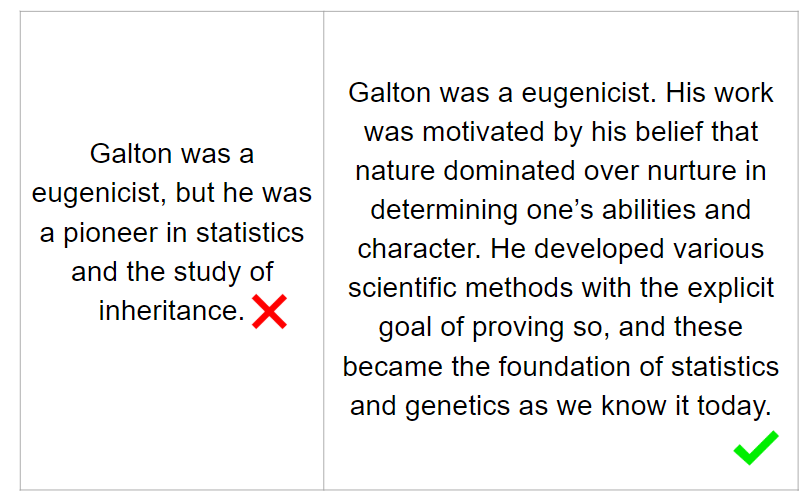

There were two sections to this goal: an individual activity and a presentation on anti-Black racism in academia. Before we begin, we want to present a quote by Shelly Tochluk from a “Witnessing Whiteness” workshop series that helped us get into a mental space appropriate for the activity:
An individual activity on privilege
This activity, titled “Multiple Modes of Privilege”, was adapted from chapter 5, workshop 5, of “Witnessing Whiteness”. It was meant to explore various specific ways that we might receive privilege or be oppressed based on our multiple identities.
We asked lab members to grab a piece of paper and a pen; the paper was divided so that the left column said “TARGET” and the right column said “NON-TARGET”. Sophie and I alternated reading a series of 10 statements describing situations, and participants identified whether they are a target by making a mark in the appropriate column.
Situational statements
If you believe you have been followed around a store while you shopped because of your race, put a mark on the target side. If this has not been your experience, put a mark on the non-target side.
If you learned to speak English as a first language, put a mark on the non-target side. If your first language was another language, put a mark on the target side.
If, as a child, you had a room of your own with a door, put a mark on the non-target side. If you had to share a bedroom or sleep in a room that doubled as another room, put a mark on the target side.
If you were raised to believe people will assume your behavior is a reflection of your race as a whole, put a mark on the target side. If you were not raised to believe this, put a mark on the non-target side.
If people question you whether you’re a man or a woman, put a mark on the target side. If you are never questioned about this, put a mark on the non-target side.
If your elected or appointed officials are comprised primarily of people of your race, put a mark on the non-target side. If this is not the case, put a mark on the target side.
If you worry about racial profiling by the police because of your race, put a mark on the target side. If you do not worry about this, put a mark on the non-target side.
If the religious or cultural holidays your family celebrates are normally recognized as official holidays by most schools and employers indicated by either a day off or increased pay for working those days, put a mark on the non-target side. If these holidays are not normally recognized as holidays by most of these institutions, put a mark on the target side.
If you do not have to consider if a workplace, restaurant, bank, or friend’s home is physically accessible to you, put a mark on the non-target side. If you do have to consider this, place a mark on the target side.
If the books you read in school largely featured people of your race, put a mark on the non-target side. If the books you read did not largely feature people of your race, put a mark on the target side.
Reflection
After all statements are read, we debriefed.
Notice the number of marks on each side of your paper. The “TARGET” side represents experiences of oppression, and the “NON-TARGET” side represents experiences of privilege. Although we weighted this list of statements to focus more on race, we still tried to acknowledge other social identities, whether visible or not. We need to always recognize that we are complex people with many different aspects to our life experience. In addition to this, we need to spend time paying attention to privilege that is a result of race because it is frequently swept under the rug.
Consider whether your individual responses were consistent with patterns associated with the typical experience of the various social positions that you represent. We asked that you do not share, as your individual experiences may be best directed under someone who is more equipped to explore these feelings. Instead, we will give everyone one minute to silently reflect, using following questions as a guide.
It’s easy to concentrate on areas where we identify as being targets, but a challenge is that a lot of emotion often comes up when we speak about privilege. It is difficult to take responsibility for dismantling privilege in areas where we are part of the dominant group, largely due to the resistance or guilt that arises. In fact, a common issue is that a deep sense of guilt can inadvertently make us less effective allies for those who are targets. This activity was not meant to make people feel bad about their background, but instead to inspire ways to use our privilege to interrupt systemic racism, and to enact real change in several areas of our lives, including academia.
We all have different axes of disadvantage.
A brief history of anti-Black racism in academia
After the activity, we presented some ways of how race and science are intertwined.
The aim in this next section to demonstrate that science is implicit in racial tendencies. There seems to be collective amnesia especially surrounding the role that science played in legitimizing and justifying racism and other atrocities, and how differences among people were evolving into scientific theories about racial hierarchies. By understanding and reckoning with the legacy of past science, we hope that this makes us better scientists and better humans in our diversifying fields. By no means is this an extensive history, and we really encourage digging deeper in the history, both scientific and otherwise, especially on topics like the American Civil War, the Civil Rights Movement, and scientific racism. You might also consider how pseudoscience and scientific racism of the past have affect internal biases and help entrench racism into our social systems, and the impact of work in your field.
Scientific Racism
Phrenology was a hit during the first half of the 19th century. Franz Joseph Gall first began studying and lecturing “mental faculties” of the brain (organology), and how to read the shape of the skull (cranioscopy); his collaborator Johann Gaspar Spurzheim then popularized the term “phrenology” to define the science of determining an individual’s traits, character, talents and social status using the size and shape of the head.
Phrenology resulted in many atrocities committed. For example, Native American burial sites, tombs, corpses were scavenged to collect skulls from every continent. Phrenologists then created and compared head casts and stolen skulls. All African Americans were generalized as inferior, uncivilized and “less beautiful”, all due to smaller head sizes and cerebral masses. In comparison, “superior” slaves demonstrated non-threatening traits such as morality, “domestication” and intelligence, which were linked to their larger skulls. Phrenology has lead to contributions in neuroscience, especially the concept of cortical localization (mental functions localized to specific areas of the brain). A very detailed history on phrenology can be found here.
Eugenics was coined in 1883 by Francis Galton (a half-cousin to Darwin), and he went on to champion the emerging scientific field, leading to papers on nature versus nurture and to the political eugenics movement. Eugenics is the idea that a person’s genes determine all traits, from height, to intelligence to disability, and that some trait variants are better than others. This is genetic determinism that has been used to justify slavery, selective breeding, sterilization, and dangerous social policies (e.g., Nazi eugenics and the Holocaust during WWII).
Eugenics was widely accepted in the past, and vestiges of eugenics is still felt today. Eugenics studies were published in a prestigious journal that is now better known as the Annals of Human Genetics, and eugenics was taught in universities. Obviously there has been a shift away from eugenics and race science, but this pseudoscience was studied, taught, and researched for decades, and we are not that separated in terms of academic generations.
Social Darwinism can be loosely defined as misapplying Darwin’s theories on evolution by natural selection in a way to justify genocide and racism. For example, the powerful figures in society are innately superior, and this is proven by their social status and power. A leader of social Darwinism was Herbert Spencer, who coined the term “survival of the fittest” during the Industrial Revolution. Under social Darwinism, class stratification and inequalities abounded, where the poor, “unfit”, and “lesser breeds” were exploited. Proponents reasoned that superior groups (such as white Europeans) can use slavery to refine cultures and advance the evolution of society, asserting Black inferiority, white superiority, and supporting racist social policies. Today, the vestiges of social Darwinism abound when the rich are considered the best/smartest/most qualified. This is felt in the racial distribution of wealth, the quality of healthcare between rich and poor, and the backing of removing welfare and government support programs. And, when examining the richest, most powerful folks of the Western world today, they are largely white.
Individuals
Next, we wanted to profiles some scientists were emblematic of the racist scientific atmosphere, and this further illustrates that science has always had racist roots. The repercussions of their work have lasted and been very problematic.
Charles Darwin is known to have hated slavery, but it also appears that Darwin held some racist views. Through Darwin’s writings we can see that he believed evolution was progressive, and that white races (especially Europeans) were more advanced than black races. From The Descent of Man, he noted that “the civilised races of man will almost certainly exterminate, and replace, the savage races throughout the world.” And at its core, these beliefs establish race differences and yield a racial hierarchy.
Carl Linnaeus laid the foundation for our current taxonomic system. However, in addition to that, Linnaeus was also “a pioneer in defining the concept of race as applied to humans. In Homo Sapiens, he proposed four taxa or categories based on place of origin at first, and later skin color. Each race was ascribed with characteristics that were endemic to individuals belonging to it.”
“Over time, this classification was used by many European countries to validate their conquering or subjugation of members of the”lower" races. In particular the invented concept of race was used to enforce slavery, particularly in the new world European colonies, and also as a basis for ethnic cleansing in 1930s Europe.”
Quotes are directly from “Out of the Shadow of Linnaeus: acknowledging their existence and seeking to challenge, racist practices in Swedish educational settings,” by Camilla Hällgren and Gaby Weiner. This paper was presented at the European Conference on Educational Research, University of Geneva, 13-15 September 2006.
Ronald A. Fisher has made significant impacts in science and math that cannot be understated. He is known as one of the three principal founders of population genetics and the father of modern statistics and experimental design. He was also a believer in eugenics and used statistics to back it up. In his book The Genetical Theory of Natural Selection, apart from devoting three chapters to defend colonialism, white supremacy and eugenics, Fisher also wrote that “civilizations fail because people of ‘low genetic value’ (read black and brown people) have more children than people with “high genetic value” (read white Europeans) and said that this was already happening in Great Britain". He also advocated that inferior races, if allowed to immigrate to England, should be restricted in the number of children they have.
James Watson is another huge figure in biology because of his role in the discovery of DNA. He has made several comments about the link between race and intelligence, specifically about how Africans are less intelligent than other races, which white supremacists have used to further their agendas. He refuses to apologize for his statements and has lost all his titles and honors from the Cold Spring Harbor Laboratory, a very prestigious lab that he led for many years.
These scientists were not alone in their ideas, and they represent a long history of racism in science. Telling your students about the more problematic side of major historical figures is one way to acknowledge racism in your own classes. Being honest about the ugliness of scientific history is a powerful way to acknowledge that racism has existed for a long time, and that artefacts of scientific racism are still around today.
How do you begin to acknowledge and tell these facts? Here’s an excellent example from Gigi Hoi from a BREWS talk:

It’s important to be specific and tell it as it is. Historically, EEB is rooted in colonialism and racism, and this fact should not be glossed over.
Environmental Racism
Clearly, morality, ethics, social awareness has all evolved over time. However, saying that something is a thing of a past is not an excuse. The movement today should be a time to reflect.
What about science today? Think about how a social construct like race has seeped into your life and how it might affect the science you do. I’m just going to highlight one instance, environmental racism, that I think is really relevant to us ecologists, and also as people living through a climate crisis.
There is a lot of evidence that shows that climate disasters disproportionately impact POC communities, whose residents breathe in more pollution, live in hotter conditions, and are relegated to unwanted neighbourhoods with less greenery. There was redlining (ca 1938-1968), the ranking of neighbourhoods to deny financial services and health care by the FHA to undesirable and risky neighbourhoods that were predominantly neighbourhoods of POC. This is no longer in practice, but the effects of it are still felt today, seen in the racial segregation of cities, the racial wealth gap, and public health. However, those communities and people who are most profoundly affected are rarely part of the environmental conversation - research and academia continues to be driven by white males. Environmental racism is the term to describe injustices arising at the intersection of environmentalism, social justice, and socio-economic factors.